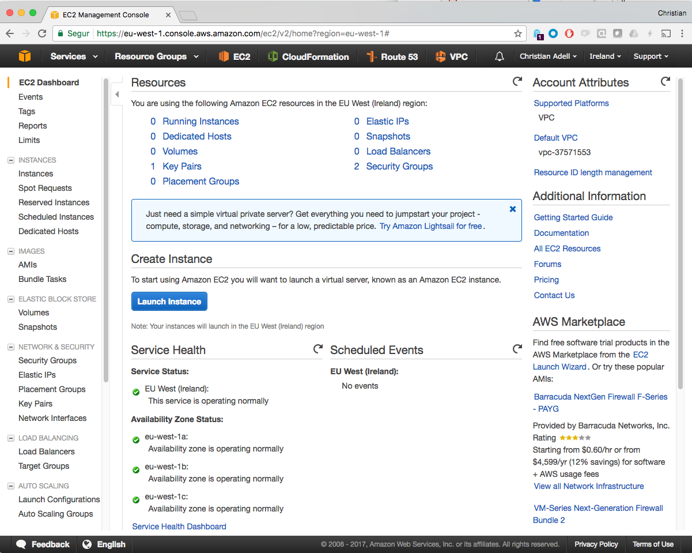
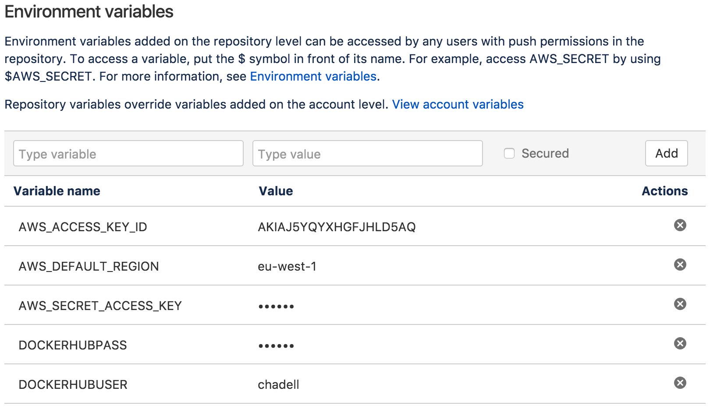
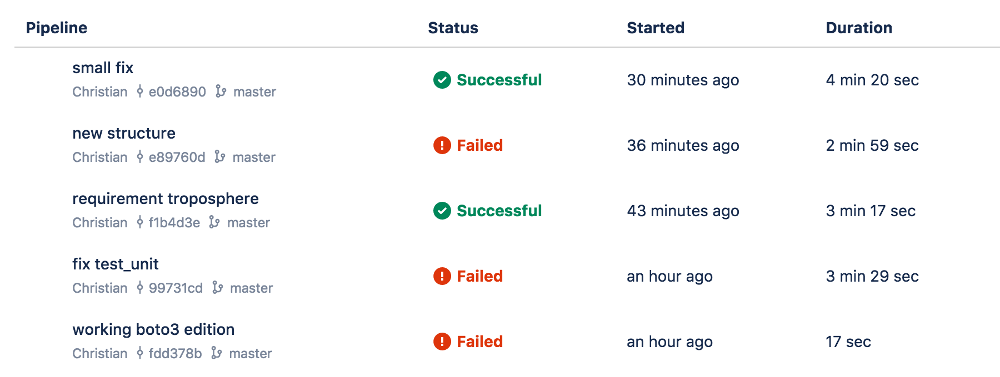

Práctica B: Despliegue en AWS con pipeline automática
Práctica 1: Del código al Cloud Provider
Objetivo
Primera parte: Preparación del entorno virtual
| Clonar repositorio del curso |
| Instalación VirtualBox y Vagrant |
| Arrancar el entorno virtual de prácticas |
Segunda parte: Definición de IaC y despliegue con aplicación
| Empaquetar nuestra aplicación en un Contenedor Docker |
| Subir nuestro Contenedor a un repositorio |
| Definir nuestra infraestructura en código en AWS |
| Desplegar y validar la infraestructura definida |
| Validación del escenario en producción |
Tercera parte: Modificaciones extras
| Modifiquemos nuestra IaC |
| ¡Destruyamos la infraestructura! |
Práctica 2: CI/CD de infraestructura dinámica
Objetivo
Materiales
|-- app
| |-- Dockerfile
| |-- app.py
| |-- app.pyc
| |-- requirements.txt
| `-- test_app.py
|-- bitbucket-pipelines.yml
|-- cloudformation
| |-- cfn_stack_update.py
| |-- requirements.txt
| `-- stack_asg.py
`-- scripts
|-- bootstrap
|-- cf_stack.sh
|-- cibuild
|-- cleanup
|-- test_docker.sh
|-- test_unit.sh
`-- upload_docker_hub.sh
Primera parte: Trabajando con nuestro propio repositorio
| Nuevo repositorio |
| Creando e instalando un par de claves |
| Inicializando el repositorio dentro de la máquina virtual |
Segunda parte: Testing en local
| Unit Testing |
| Functional Testing |
| Mejorar los tests |
Tercera parte: Integración y despliegue continuo
| Creación de una Pipeline |
| Definición de pasos y variables |
| Ejecución de la Pipeline |
| Validación de resultados |
| Añadir nuevos pasos a la Pipeline |
Primera parte: Preparando el entorno
Descargando las fuentes
- El primer paso será clonar/descargar el repositorio del curso desde https://bitbucket.org/dcaba/devops-training/
git clone https://bitbucket.org/dcaba/devops-training.git
- Para facilitar el desarrollo de la práctica utilizaremos un entorno virtual Linux con soporte para Python y Docker (usaremos el contenido del directorio lab1/vagrant)
- Instrucciones detalladas más adelante
Materiales
|-- lab1
| |-- app
| | |-- app.py
| | |-- Dockerfile
| | |-- requirements.txt
| |-- cloudformation
| | |-- stack_asg.py
| |-- vagrant
| | |-- Vagrantfile
Instalación entorno de virtualización VirtualBox
Si disponías de instalaciones previas (desactualizadas / no operativas), probablemente debas limpiar tu sistema
VirtualBox: https://www.virtualbox.org/wiki/Downloads

Instalación Vagrant para provisionar la VM
Si dispones de una versión antigua de Vagrant, probablemente debas actualizarla para ir alineado con VirtualBox
Vagrant: https://www.vagrantup.com/downloads.html

Notas para la siguiente sección
En caso de fallo inicializando Vagrant, asegúrate que el soporte de VT-x se encuentra habilitado en la BIOS.
En entornos MS Windows, asegúrate que Windows Hyper-V está desactivado en “Windows Features on or off”
Para evitar problemas con la importación de ficheros, puedes volver a clonar el repositorio dentro de la máquina Vagrant y no depender de los ficheros externos
Arranque de la VM con Vagrant
Inicializar una máquina vacía, que descargará la imagen que después usaremos:
vagrant init williamyeh/ubuntu-trusty64-docker
vagrant up; vagrant halt; vagrant destroy
En lab1/vagrant, donde tenemos definido el Vagrantfile, arrancaremos la máquina virtual esta vez con la configuración que esperamos:
$ cd lab1/vagrant
$ vagrant up --provider virtualbox
$ vagrant status
Trabajando en la VM
Accederemos a la máquina virtual creada, donde desarrollaremos la práctica:
$ vagrant ssh default
Y dentro de ésta, nos situaremos en el directorio de trabajo:
vagrant@devops-host ~ $ cd /vagrant/
vagrant@devops-host /vagrant $ ls
bitbucket-pipelines.yml lab1 lab2 lab3 README.md slides
vagrant@devops-host /vagrant $ cd lab1
vagrant@devops-host /vagrant/lab1 $
Segunda parte: Definición de IaC y despliegue con aplicación
Descripción de la imagen Docker con la aplicación
Una vez tenemos el entorno preparado, conectados a la máquina con vagrant, el primer objetivo será crear una imagen Docker que contenga nuestra aplicación, tanto para desarrollo como producción.
Dentro de app (en la VM gestionada por vagrant, paths relativos respecto a /vagrant/lab1), disponemos de un Dockerfile que describe los pasos necesarios para crear la imagen del contenedor:
$ cat Dockerfile
FROM gliderlabs/alpine:3.6
MAINTAINER DevOps Training BCN "devops-training-bcn@googlegroups.com"
RUN apk add --no-cache python && \
python -m ensurepip && \
rm -r /usr/lib/python*/ensurepip && \
pip install --upgrade pip setuptools && \
rm -r /root/.cache
COPY . /app
WORKDIR /app
RUN pip install -r requirements.txt
ENTRYPOINT ["python"]
CMD ["app.py"]
¡Nuestra aplicación!
En nuestro caso, la aplicación es un simple servidor web desarrollado con el framework Flask sobre Python. Se puede ver en lab1/app/app.py:
from flask import Flask
app = Flask(__name__)
@app.route("/")
def index():
return "Index!"
@app.route("/hello")
def hello():
return "Hello World!"
def main():
# listening in port 5000
app.run(threaded=True, debug=True, host='0.0.0.0')
if __name__ == '__main__':
main()
Creación una imagen de Docker con nuestra aplicación
Crearemos el container a partir del Dockerfile (podéis personalizarlo con vuestros datos). Siéntete libre de bautizar también a tu imagen ;)
Este proceso tarda unos minutos pues debe descargar la imagen inicial definida en FROM
$ docker build -t <docker_image_name>:<tag> .
Una vez creada la imagen del contenedor, podemos verla disponible en:
$ docker images
REPOSITORY TAG IMAGE ID CREATED SIZE
<docker_image_name> <tag> d1667d4db76a 2 minutes ago 400.3 MB
Arrancamos nuestra aplicación en local
A partir de la imagen creada, pasaremos a arrancarla en local para validar que el contenedor se ha creado correctamente y la aplicación funciona como deseamos:
$ docker run -d -p <exposed_port>:5000 <docker_image_name>:<tag>
El exposed-port nos permite mapear externamente un puerto diferente al que nuestra aplicación sirve por defecto (5000).
Revisemos que el container está funcionando (puede haber otro en marcha según el entrono de trabajo):
$ docker ps
CONTAINER ID IMAGE COMMAND CREATED STATUS PORTS NAMES
349b69cbe16b <docker_image_name>:<tag> "python app.py" About a minute ago Up About a minute 0.0.0.0:4444->5000/tcp grave_kare
Notar que docker nos da un nombre e ID aleatorios, y que nos indica cuál es el COMMAND que esta ejecutando, python app.py
Validación del funcionamiento de nuestra aplicación en local
Ahora verifiquemos (manualmente) en local que la dupla aplicación/contenedor funciona:
$ curl localhost:<exposed-port>
Index!
$ curl localhost:<exposed-port>/hello
Hello World!
Publicación de nuestro contenedor
El entorno de trabajo en local es útil para el desarrollo, pero para usar nuestra aplicación la debemos poder desplegar en producción.
Para eso, utilizaremos Docker HUB como repositorio (¡Primero debemos crear una cuenta personal! No es necesario crear un repositorio desde el interfaz web):
$ docker login --username=<yourhubusername> --password=<yourpassord>
Crearemos un segundo nombre (tag) de la imagen, esta vez, alineada con la estructura de Docker Hub:
$ docker tag <original_docker_image_new>:<original_tag> <yourhubusername>/<docker_image_name_new>:<tag_new>
Subimos la imagen a Docker Hub (puede tardar un tiempo pues la imagen se sube a Internet):
$ docker push <yourhubusername>/<docker_image_name_new>:<tag_new>
Preparación del entorno de Producción
En nuestro caso utilizaremos un entorno de infraestructura dinámica, Amazon Web Services
Para comenzar deberemos disponer de una cuenta: https://portal.aws.amazon.com/gp/aws/developer/registration/index.html
Creación del stack en AWS
En AWS, una de las opciones para crear un entrono de infraestructura dinámica es usar el servico Cloudformation, que mediante unos datos en estructura JSON o YAML, permite crear múltiples recursos propios de AWS
En nuestro caso, para crear esta template, que subiremos a AWS, usaremos un script en python ubicado en lab1/cloudformation/stack_asg.py
Si analizamos el script veremos que el stack crea múltiples recursos a partir de unos parámetros de entrada (por ejemplo, la imagen docker a utilizar), entre ellos un Autoscaling Group (ASG; una entidad que según unos parámetros irá añadiendo más o menos capacidad de computación) y un balanceador de carga asociado a este ASG
Preparación del entorno Python
En esta práctica generaremos el fichero de Cloudformation desde código, usando python/troposphere. Por lo tanto, y dentro de la máquina virtual arrancada con vagrant:
Instalaremos Python2 y su gestor de paquetes (pip):
$ sudo apt-get update $ sudo apt-get install python-pipInstalaremos la librería necesaria para crear el template de CloudFormation, troposphere (ver imports en el código para confirmar las dependencias), mas actualizaremos una dependencia de ésta:
$ sudo pip install --upgrade setuptools $ sudo pip install troposphere
Ejecución el script de creación
La ejecución del script sólo crea la template, que deberemos guardar en un fichero JSON para usar en la consola de Cloudformation/AWS:
$ cd /vagrant/lab1/cloudformation/
$ python stack_asg.py > stack.json
Este fichero estará disponible en nuestro directorio del curso pues el directorio “/vagrant” está mapeado fuera de la máquina virtual en “/devops-training”:
config.vm.synced_folder "../../", "/vagrant", disabled: false
En caso de problemas con la sincronización de directorios podemos acceder desde nuestra máquina, sacamos el fichero fuera del entorno Vagrant (se puede usar cualquier cliente sftp), bien usando una key de autenticación (sin password):
$ scp -P 2222 -i ~/.vagrant.d/insecure_private_key vagrant@127.0.0.1:/vagrant/lab1/cloudformation/stack.json .
O autenticación via password:
$ scp -P 2222 vagrant@127.0.0.1:/vagrant/lab1/cloudformation/stack.json .
El password por defecto en esta máquina de Vagrant es vagrant
Entrando a la consola de AWS
Aunque en los entornos habituales esta ejecución también se realiza vía código, en este caso utilizaremos la consola AWS. Atención a la esquina superior derecha, donde asignamos la región de trabajo para cada servicio AWS.
Como requisito para arrancar máquinas en EC2, hemos de crear un par de llaves, que se configurarán en las máquinas de Amazon y nos permitirían un acceso directo a la consola de éstas. Usa la sección Key Pairs en EC2 (la clave privada se descarga automáticamente).
AWS Console

Creación y ejecución del Cloudformation
Ya con el par de claves disponible, dentro de la sección CloudFormation (upload template), subimos el fichero especificando:
- docker-image (imagen docker que habéis subido a Docker Hub)
- instance-type (dejar valor por defecto, pues no tiene coste)
- keyname (deberemos haberla creada a priori)
- webport (puerto que expondrá el contenedor, que puede ser también el 5000)
- scale-capacity (número de instancias a desplegar)
Podemos aceptar el resto de valores por defecto. Revisemos la herramienta de previsión de costes, y el coste del ejemplo, que nos propone Cloudformation (recordad filtrar por la región en la que estemos desplegando). A partir de este punto, Cloudformation empieza a desplegar todos los recursos necesarios para hacer funcionar el entorno de producción.
Validación del escenario en producción (i)
- Analicemos la información de nuestro stack creado por Cloudformation:
- Events (deberemos poder seguir el proceso de despliegue del stack)
- Outputs
- Resources
- Parameters
- Validemos en el servicio EC2 que se han creado:
- 1 Autoscaling group (ASG)
- 2 instancias EC2 debido a la política del ASG
- 1 ELB ligado al ASG
Validación del escenario en producción (ii)
- Dentro del ELB, podemos ver las instancias asociadas y si tiene el servicio “InService” (las máquinas tardan un par de minutos en arrancar). Esto ser valida según el Health Check definido. Y este ELB expone al exterior el puerto estándar 80.
- Accedamos a la url del ELB puerto 80 para validar que funciona
- o a las instancias, en los puertos de servicio correspondientes
- Juguemos con el ASG, eliminando alguna instancia, para ver como ser recrean
- Validemos el ELB y su healthcheck
Tercera Parte: Modificaciones extras
Modifiquemos nuestra IaC
- Cambiar el puerto del ELB del puerto 80 al puerto 6789
- Incrementar el número de servidores a 4
- Cambiar la aplicación para que acepte el path ”/devops” y retorne el string “16-02-2019”
- Añadir en la respuesta de la aplicación la IP privada de la máquina que responde
¡Redespleguemos!
Para cada cambio, recuerda reflejar los cambios en código, actualizar tu stack y ver como los cambios se despliegan automáticamente

Si no hay cambios en la infraestructura (por ejemplo, cambios en el container), CF no actualizará el Stack, en ese caso podemos simular el rollout mediante la terminación de instancias del Autoscaling Group.
¡Destruyamos la infraestructura!
Destruye tu stack de Cloudformation, probablemente no lo quieres activo toda la semana: Delete Stack

Primera parte: Trabajando con nuestro propio repositorio
Nuevo repositorio
- Seguimos utilizando la misma máquina virtual del Lab1 (Vagrant)
- Creamos un repositorio nuevo para crear una pipeline propia que utilizaremos en la segunda parte.
- Primero, en la interfaz web de Bitbucket crearemos un repositorio y escogeremos la opción I’m starting from scratch que nos mostrará los siguientes comandos (no ejecutar aún):
git clone git@bitbucket.org:<bitbucket_user>/<repo_name>.git
cd <repo_name>
echo "# My project's README" >> README.md
git add README.md
git commit -m "Initial commit"
git push -u origin master
Creando e instalando un par de claves
- Para proseguir, necesitaremos de nuestras credenciales en Bitbucket. Para eso, debemos crear una llave SSH en nuestro perfil de bitbucket (o reusar una).
- Click on user avatar -> View profile -> Security -> SSH keys
Esta llave la copiaremos dentro de Vagrant, bien directamente en la copia compartida de los materiales del curso (visible en la VM bajo
/vagrant), o usando un cliente scp:scp -P 2222 -i ~/.vagrant.d/insecure_private_key <nuestra_llave_ssh> vagrant@127.0.0.1:/vagrant/
Y ya dentro de Vagrant otra vez, la activaremos:
eval `ssh-agent -s`
ssh-add <nuestra_llave_ssh>
Inicializando el repositorio dentro de la máquina virtual
Una vez activa la llave ssh, ya podremos realizar los pasos propuestos por bitbucket para clonar (descargar) nuestro nuevo repositorio, fuera del directorio /vagrant (por ejemplo, en el home directory del usuario en la VM)
Finalmente, y para inicializar el repositorio con los ficheros de la práctica 2, copiaremos éstos desde lab2/* al nuevo repositorio:
cp -r /vagrant/lab2/* .
Segunda Parte: Testing en local
Unit Testing
Primero actualizamos el sistema e instalemos el gestor de entornos de Python:
sudo apt-get update
sudo apt-get install python-virtualenv
Analicemos y ejecutemos el fichero scripts/test_unit.sh:
#!/bin/bash
set -ex
virtualenv .venv
. .venv/bin/activate
pip install -r app/requirements.txt
coverage run app/test_app.py
coverage report app/app.py
En caso de errores como:
-bash: ./scripts/test_unit.sh: /bin/bash^M: bad interpreter: No such file or directory
Convertir saltos de líneas a formato Unix:
sudo apt-get install dos2unix; dos2unix scripts/*
Functional Testing
Analicemos y ejecutemos el fichero scripts/test_docker.sh
#!/bin/bash
set -ex
docker build -t devops:test app/.
cid=$(docker run -d -p 6789:5000 devops:test)
until test=$(curl localhost:6789 | grep 'Index!') &> /dev/null
do
sleep 0.1
done
# Clean Docker
docker rm -fv "$cid" &> /dev/null
if [[ "$test" == "Index!" ]]; then
echo "Test Passes! Smile :)"
else
echo "Test Fails, fix it!"
exit 1
fi
Do it yourself!
- Modifiquemos el código y veamos como afecta a nuestro testing
- Ampliamos el test coverage al 100%
Tercera parte: Integración y despliegue continuo
Continuous Deployment
Paso a paso:
- Creamos una Pipeline en Bitbucket donde definimos los pasos
- Añadimos los test previos al despliegue
- Creamos el paquete de software (container) y lo subimos a un repositorio
- Creamos/actualizamos el despliegue de infraestructura que utilice esta nueva versión
Creamos una Pipeline en BitBucket
- En la página web de BitBucket vamos a “Pipelines” y seleccionamos “Enabled Pipelines”
- En el template de la Pipeline pegamos el contenido de lab2/bitbucket-pipelines.yml y hacemos commit
- Validemos que la Pipeline falla con “No such file or directory!” (no hemos commiteado nuestro repo local!)
image: python:2.7
# enable Docker for your repository
options:
docker: true
pipelines:
default:
- step:
caches:
- pip
script: # Modify the commands below to build your repository.
- scripts/cibuild
¿Qué contiene CIBUILD?
#!/bin/bash
set -ex
./scripts/bootstrap
./scripts/test_unit.sh
./scripts/test_docker.sh
./scripts/upload_docker_hub.sh
./scripts/cf_stack.sh
./scripts/cleanup
Creamos las variables de entorno en la Pipeline
- En Setting -> Pipelines -> Environment variables añadimos las siguientes variables:

- Básicamente son las credenciales de Docker Hub y AWS (en la siguiente slide)
- Estas variables de entorno se usaran en los siguientes scripts.
Tenemos las credenciales de DockerHub pero no de AWS…
- Use your AWS account email address and password to sign in to the AWS Management Console.
- In the top right of the console, choose your account name or number. Then choose My Security Credentials.
- Choose Continue to Security Credentials.
- Expand the Access Keys (Access Key ID and Secret Access Key) section.
- Choose your desired action.
- To create an access key
Script de subida del contenedor
En lab2/scripts/upload_docker_hub.sh tenemos un script para construir y subir nuestro contenedor a Docker Hub
#!/bin/bash
set -ex
docker build -t $BITBUCKET_REPO_SLUG:latest app/.
docker login -u $DOCKERHUBUSER -p $DOCKERHUBPASS
docker tag $BITBUCKET_REPO_SLUG $DOCKERHUBUSER/$BITBUCKET_REPO_SLUG:latest
docker push $DOCKERHUBUSER/$BITBUCKET_REPO_SLUG:latest
Script de creación del Cloudformation
En lab2/scripts/cf_stack.sh tenemos un script para crear el stack de Cloudformation.
Este script utiliza tres variables de entorno que debemos añadir en la Pipeline:
- STACKNAME: Es el nombre que recibirá el stack deployado en AWS
- KEYNAME: Es el nombre de la llave que hemos creado en AWS-EC2
- WEBSERVERPORT: Es el puerto en el que el container está escuchando
#!/bin/bash
set -ex
pip install -r cloudformation/requirements.txt
python cloudformation/stack_asg.py > stack_asg.json
cat stack_asg.json
python cloudformation/cfn_stack_update.py --stack-name ${STACKNAME} --docker-image ${DOCKERHUBUSER}'/'${BITBUCKET_REPO_SLUG}':latest' --template 'stack_asg.json' --keyname ${KEYNAME} --webserverport ${WEBSERVERPORT}
Subida automática del Cloudformation
En lab2/cloudformation/cfn_stack_update.py tenemos un script que nos sube el Cloudformation automáticamente
client = boto3.client('cloudformation')
list_of_stacks = client.list_stacks()
create = True
for stack in list_of_stacks['StackSummaries']:
if args.stack_name in stack['StackId'] and stack['StackStatus'] != 'DELETE_COMPLETE':
create = False
log.info(create)
if create:
client.create_stack(
StackName=args.stack_name,
TemplateBody=open(args.template, 'r').read(),
Capabilities=[
'CAPABILITY_NAMED_IAM'
],
Parameters=[
{
'ParameterKey': 'DockerImage',
'ParameterValue': args.docker_image,
},
...
Volvemos a ejecutar la Pipeline…
Para hacerlo, podemos hacer otro commit en el repositorio con todos los datos en local
git add .
git commit -m "message"
git push -f origin master
Revisemos la ejecución de la Pipeline

…y verifiquemos nuestra infraestructura en AWS
Do it yourself!
- ¿Realmente un cambio en el código se traduce en un nuevo deployment? ¿Podemos mejorarlo?
- ¿Cómo podríamos introducir un entorno de PRE?